GitHub
GitHub es una plataforma de alojamiento de código para control de versiones y colaboración. Te permite a ti y a otros trabajar juntos en proyectos desde cualquier lugar. Estas capturas de pantalla que a continuación se presentan es un tipo tutorial del registro en GITHUB y la relación que hay para trabajar en Amazon Web Services.
No es necesario codificar. Para completar este tutorial, necesita una cuenta de GitHub.com y acceso a Internet. No necesita saber cómo codificar, usar la línea de comando o instalar Git (el software de control de versiones GitHub está integrado).
Registro en Git Hub
(Recordar que el registro en GIT HUB es gratuito y solo se ocupa internet o bien también existe la versión por cobrar.) Iniciaremos nuevamente con el llenado de formulario después de a ver entrado a la página principal GitHub (https://github.com/github) de y de haberle dado clic a crear cuenta (3 pasos).
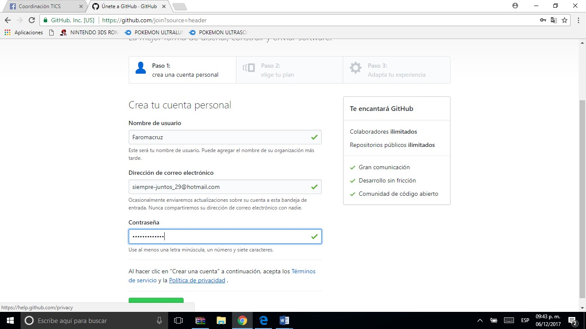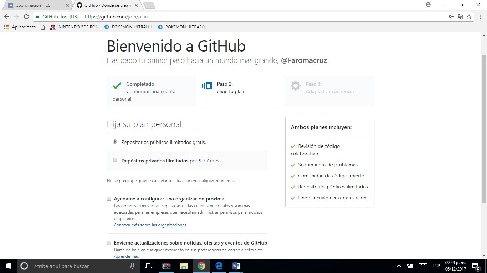 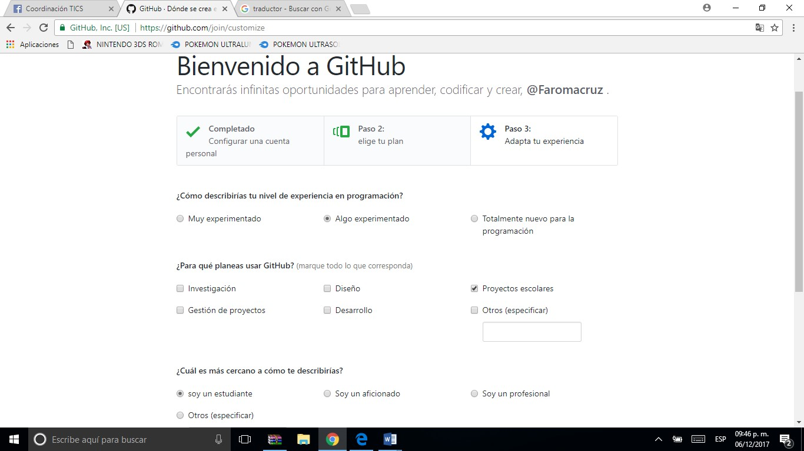Introducción. Bienvenido a GitHub o iniciar Proyecto.
Después de terminar tu registro en la pagina de GitHub continuamos ya sea con empezar hacer el proyecto como se muestra en la parte derecha de la impresión de pantalla o revisar la guía de funcionamiento del lado izquierdo.
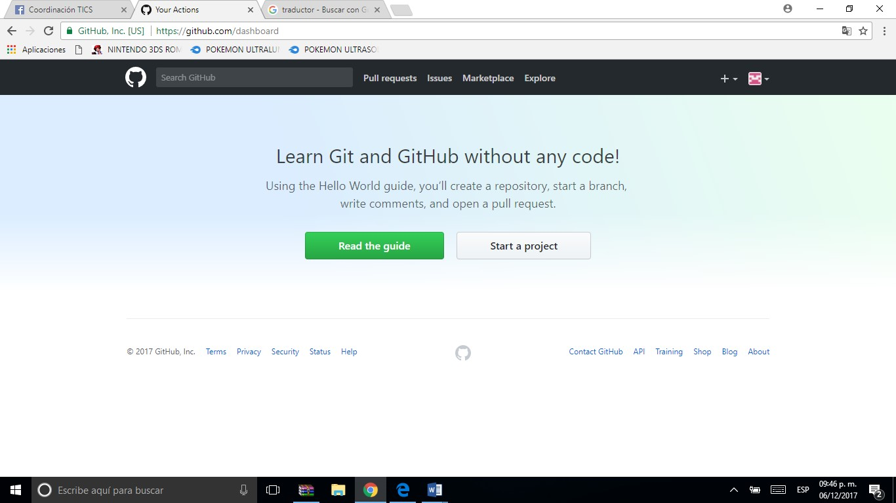Antes de empezar (verificar cuenta de correo electronico).
Mismos pasos entrar a nuestra cuenta de correo, bandeja de entrada, clic en el link del correo para el registro y listo, tenemos nuestra cuenta oficial en GitHub.
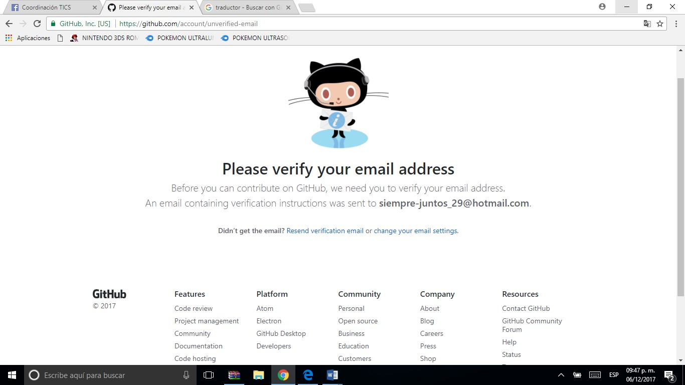 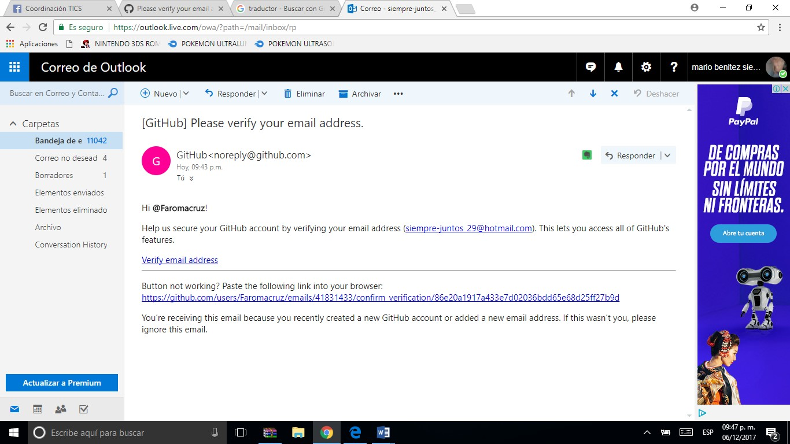Crear Repositorio (proyecto) en GitHub.
Solo nos queda crear nuestro repositorio, empezamos por darle un nombre a nuestro proyecto, una descripción, el tipo que quieres que sea público, privado y agregar los archivos con los que estamos haciendo nuestra pagina para su posterior uso.
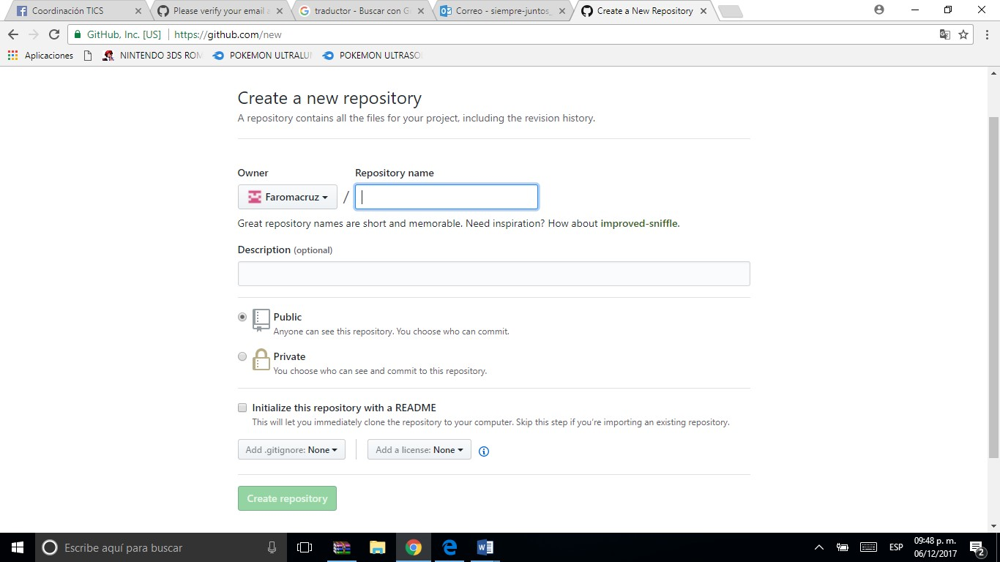sí vimos la guía anterior antes de empezar el proyecto y alguno que otro tutorial sabemos que esto es para importar los archivos de nuestra página a GitHub y poder modificar nuestra página o mejorarla, pero con las herramientas de este software que son de gran ayuda ya que no se necesita codificar o saber mucho sobre el tema.
Compatibilidad de GitHub con el Amazon Web Services.
Después de haberle dado uso a nuestros archivos en GitHub es hora de hacer que el servicio de Amazon pueda ser compatible con el software GH.
Para esto entraremos a la pagina de Amazon W. S. y daremos clic en servicios, usuarios y grupos.
Empezaremos a crear un usuario en Amazon al que será como el usuario cliente que usará nuestro servidor ya registrado, a la cuenta con la que hicimos el registro en un principio será la principal (Administrador)y esta que crearemos nosotros administraremos sus permisos sobre servicios de Amazon y controlaremos la actividad para que posteriormente podamos trabajar con nuestro proyecto que importaremos desde GH.
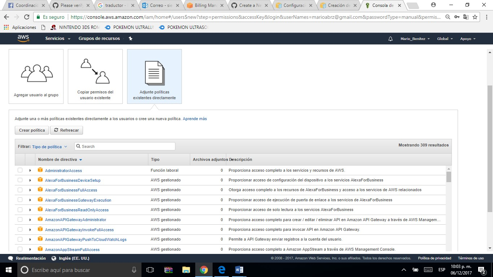Y al crear al usuario y el grupo podremos tener las credenciales del trabajo realizado en las plataformas.
Creación del usuario de trabajo en Amazon.
Después de darle permiso a este usuario desde la cuenta principal, llenaremos algunos datos de identificación y autorización.
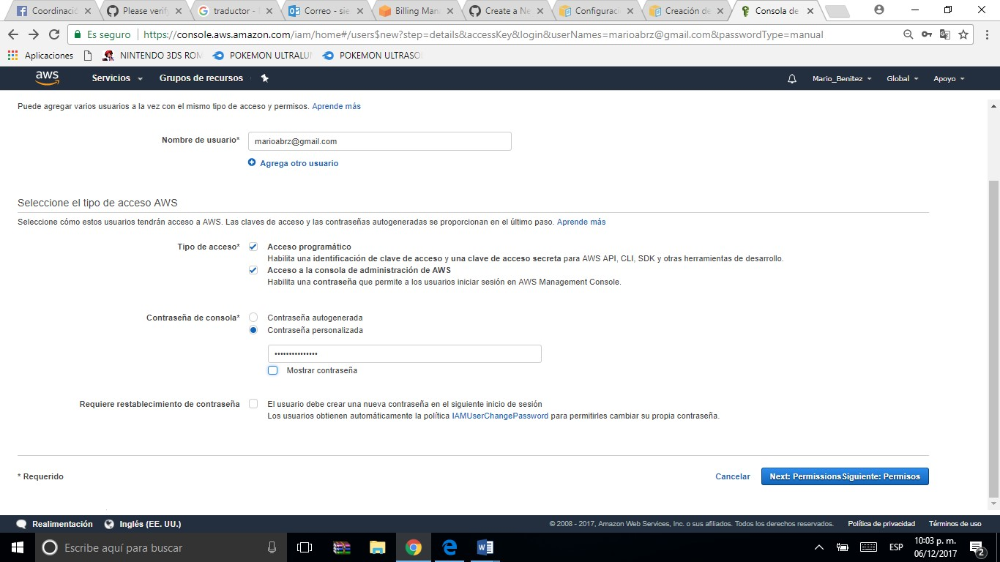 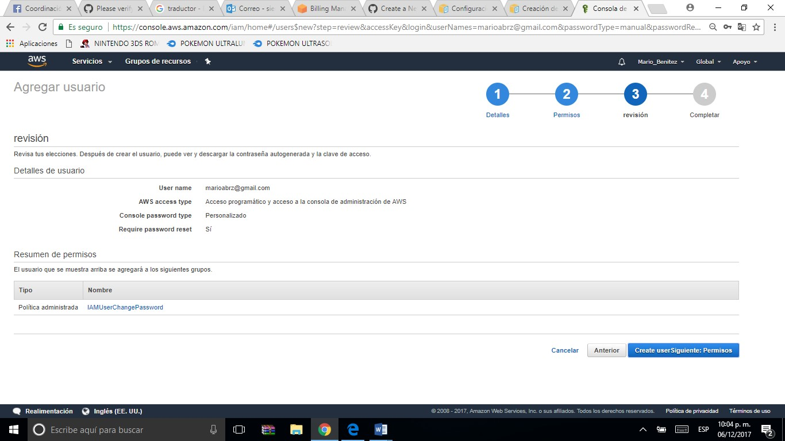Validación del usuario IAM, del grupo y role creados.
Después de a ver dado los permisos necesarios de nuestra primera cuenta con la que registramos Amazon, y después de terminar de validar contraseñas, la creación de código QR de AMF y poder editar, y consultar los datos, todo estará listo para poder trabajar con los servidores de Amazon y con nuestros recursos creados para hacer una conexión con GitHub.
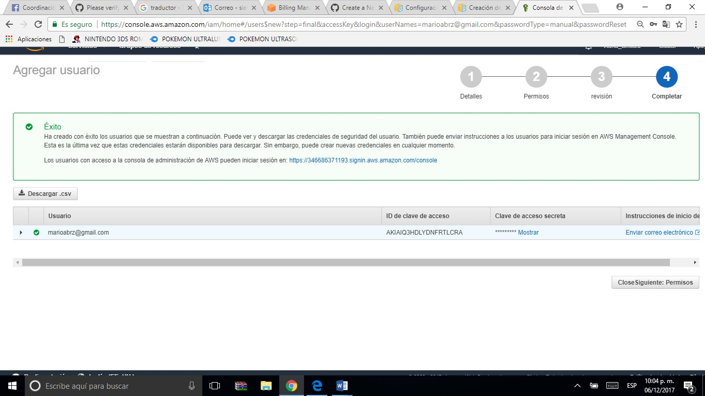 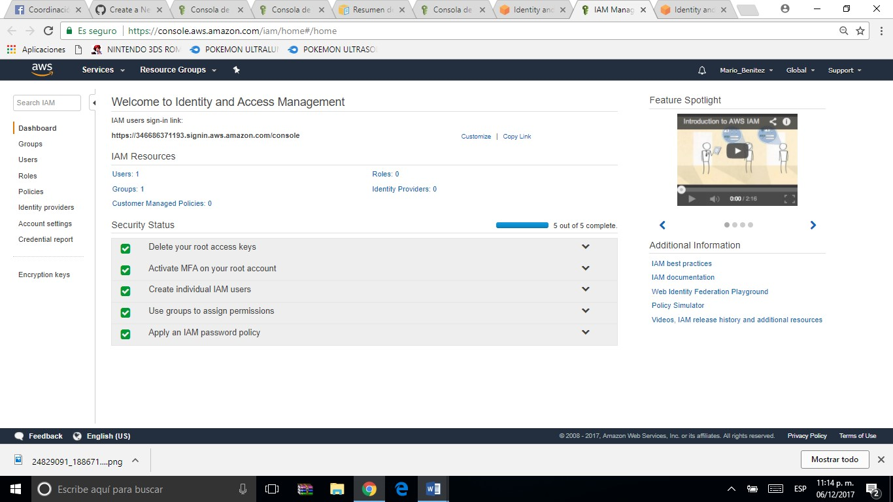Credenciales.
Hasta donde se sabe por ahora son para comprobar las cuentas, usuarios, grupos y proveedores creados que pertenecen a tu cuenta de servicio de Amazon, es como la identificación de tu control que llevas sobre estos recursos ya creados.
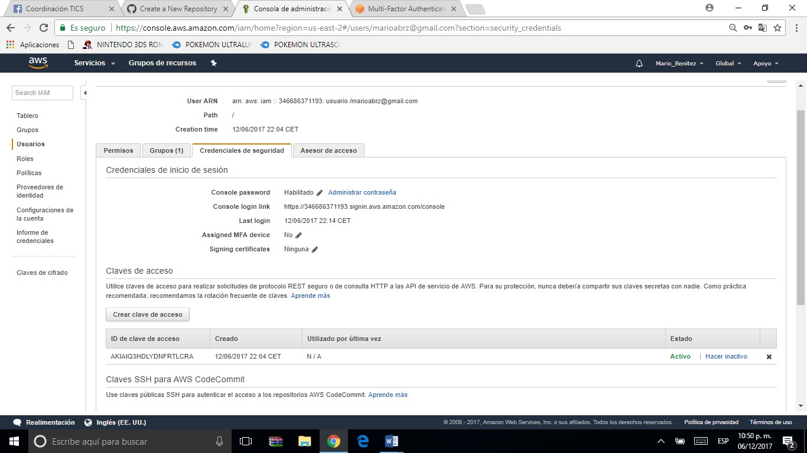 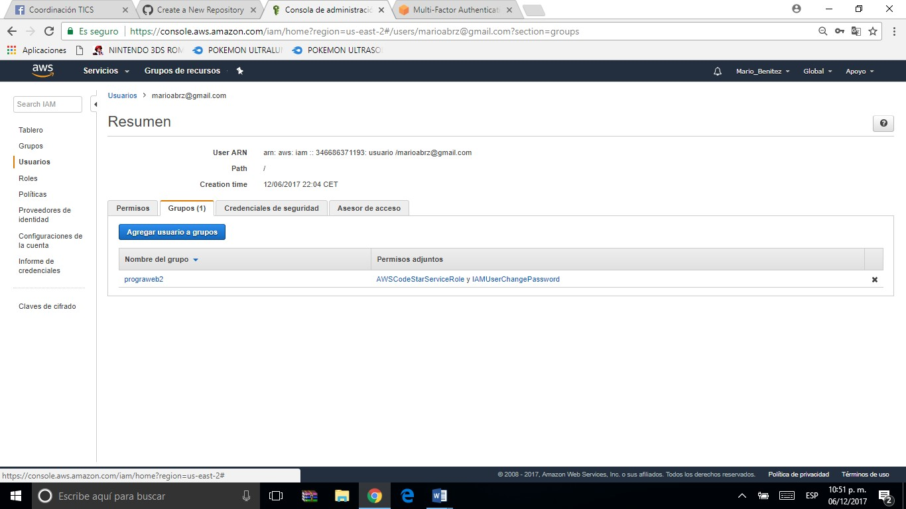 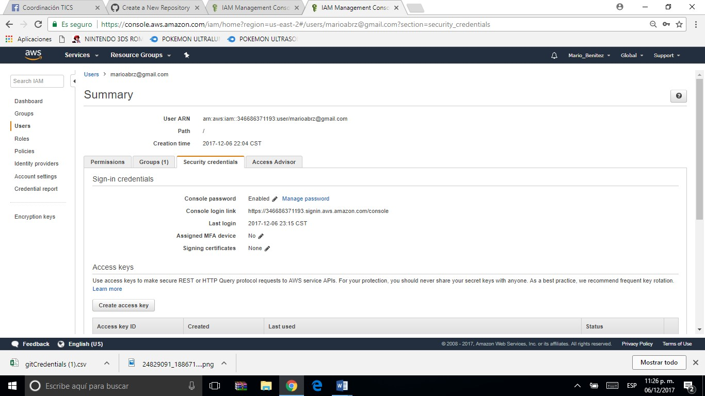